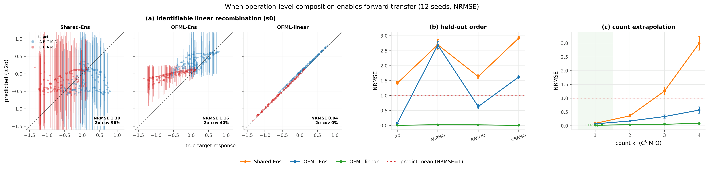

Experiments
Terminal-measurement-only OFML — two claims (transfer, active learning) and the experiments that support them
Terminal-measurement-only OFML learns a protocol as the composition of shared operation maps, and can transfer zero-shot when those maps are identifiable from terminal measurements. The same terminal-measurement-only constraint also exposes intrinsic failure modes (unknown operations, semantics shift, misspecified read-out, target-only higher-order interactions). Active learning on the target provides a closed-loop correction, but its sample-efficiency advantage over random depends on the bottleneck (coverage or capacity). Finally, recording intermediate states during training through observers — even a subset of operation outputs — repairs these limitations, and only a protocol-compositional surrogate model can exploit it.
When compositional representation is combined with identifiability and model specification of the reused operations, terminal-only OFML transfers zero-shot to an unseen target. When these break, it fails, and the conditions can be recovered with intermediate observation.
Even when identifiability breaks at b=0, actively observing the target terminal drives the error below the floor, and compositional OFML adapts faster than unstructured baselines.
Central result
Cost-indexed forward transfer and target adaptation (Fig. 2 / Table 2)
The central result that ties the whole experiment together. The macro NRMSE curve against the cumulative acquisition cost \(b\) of target labels shows, in a single figure, forward transfer at \(b=0\) (Claim 1), active adaptation at \(b>0\) (Claim 2), and the sticking level = descriptor aliasing floor (the terminal-only limit, Claim 1). Three models (Independent-Ens / Shared-Ens / OFML-Ens) are compared under the same balanced Sobol schedule (12 bench seeds, budget 200, NRMSE for all metrics).

Experimental setting
Common setup
We use two operation-semantics families. The linear family consists of area-preserving affine operations + linear read-out (\(A\)=rot 40°, \(B\)=x-shear, \(C\)=coordinate swap, \(D\)=rot −35° (\(s1\) only), \(M\)=rot 25°, read-out \(y=1.1s_0-0.7s_1+0.2\)), for which OFML-linear is the capacity-matched model. The nonlinear family consists of sigmoid/tanh operations + nonlinear read-out (the base read-out carries a high-frequency term \(+0.25\sin(2\pi(s_0-s_1))\), imposing an irreducible difficulty lower bound even in-distribution). The vocabulary is \(\{A,B,C,D,M\}\) + observer \(O\). The common source = 9 protocols (singletons + all pairs in both orders: AMO, BMO, CMO, ABMO, BAMO, ACMO, CAMO, BCMO, CBMO). Per protocol, 30 training input points (noise \(\sigma=0.02\)), 120 noiseless test input points, 3 seeds. Each scenario is an independent transfer setting; RMSE is comparable within a scenario (across models) but not across scenarios.
| Scenario | Stressor | Realization |
|---|---|---|
| s0 success | in-distribution composition | target = unseen triples ABC M O, CBA M O |
| s1 unknown-op | unseen operation | target uses \(D\) (absent from source) |
| s2 semantics-shift | test semantics differ | source=base, target=shifted family |
| s3 input-extrap | test input out of support | source \(x\in[0,0.5]^2\), target \(x\in[0.55,1]^2\) |
| s4 missing-probe | few source contexts | reduce the source set |
| s5 lipschitz | dynamics amplification | high-gain / nonlinear_lipschitz |
| s6 misspec | unfittable read-out | +high-frequency term / nonlinear_misspecified |
| s7 three-body | interaction present only when \(\{A,B,C\}\) all appear | +presence-gated \(s_0 s_1\) term (unseen in pair sources) |
| Method | Structure exploited | Model | Uncertainty |
|---|---|---|---|
| Prot-GP | protocol identity | per-protocol RBF-GP | GP posterior |
| Pooled-GP | operation counts | RBF-GP over \([x,\text{count}(A..O),\text{variant}]\) | GP posterior |
| Shared-Ens | operation counts | 5-member MLP ensemble on the same features | spread |
| OFML-MCD | composition | composed net, MC-dropout, BO selection | dropout |
| OFML-Ens | composition | composed net, 5-member deep ensemble, BO selection | spread |
| OFML-BNN | composition | per-operation tanh-MLP, HMC, \(d\)=5, h=16 | posterior |
| OFML-GPN | composition | per-operation random-feature GP(L=24), HMC, \(d\)=5 | posterior |
| OFML-linear | composition, linear operations | matrix learned per operation, \(d\)=2 (matched) | restart spread |
| OFML-nonlinear | composition, capacity-matched | composed ReLU net, \(d\)=2, h=32 | spread |
BO plateaus: in the nonlinear family, the \(s0\) validation RMSE stays at ≈0.21–0.24 across 452 to \(10^5\) parameters (insensitive to capacity), consistent not with insufficient capacity but with the identifiability lower bound intrinsic to terminal-measurement only.
Claim 1 When the right conditions (identifiability) are met, OFML helps forward transfer (b=0)
Treating a protocol as the composition of shared operation modules, terminal-only OFML transfers zero-shot to an unseen target when the reused operations are identifiable and the model is correctly specified. When the conditions break it fails, and the conditions can be recovered with intermediate observation during training.
1-A Existence of transfer (linear, nonlinear, order, count)

OFML-linear recovers the held-out target near-exactly (NRMSE 0.04), while the order/count-blind Shared-Ens (1.30) and composed-net OFML-Ens (1.16) predict the aliased mean. (b) Held-out order: only an identifiable compositional model stays low on unseen orders. (c) Count extrapolation \(C^k M O\): an identified module re-applies under repetition. Per-panel details below in Fig. 3a / Fig. 3b / Fig. 3c.Linear s0 parity (existence proof)
Test: Can it learn from terminal \(y\) only and predict an unknown protocol zero-shot?
Result (NRMSE): the capacity-matched OFML-linear near-perfectly recombines \(s0\) at 0.042, order-blind Shared-Ens is at 1.300 (aliasing mean), OFML-Ens 1.158.
Order identifiability (non-commutativity)
Test: Can it transfer to an unseen order that has the same number of operations but differs only in order?
Result (NRMSE): only OFML-linear is low across all held-out orders (macro 0.017), while OFML-Ens 1.256 and Shared-Ens 2.169 fail because they are order-blind.
Count identification (repetition extrapolation \(C^k M O\))
Test: Can it extrapolate an operation seen at most once in training by repeating it \(k\) times?
Result (NRMSE): OFML-linear stays at 0.082 even at \(k\)=4, while Shared-Ens is count-blind and diverges to 1.983.
1-B Conditions and limits (identifiability audit, failure set)
Direct audit of identifiability (theory bridge)
Test: Does the rank relation \(r^{\mathrm{id}}\) at the true \(\theta\) predict transfer success or failure?
Result: s0 \(r^{\mathrm{id}}=0\)→transfer succeeds (0.04), s1 \(r^{\mathrm{id}}=0.414\) and s4 \(r^{\mathrm{id}}=0.167, K=178\)→fail. Quantifies the rank condition of Proposition 4.
To the experiment page →Identification limits of terminal-only (transfer conditions × s-scenarios)
Test: Can each failure — C1 vocabulary, C2 semantics, C3 coverage, C4 identification, C5 stability, C6 realizability — be recovered zero-shot?
Result (NRMSE): s1 fails for all models (1.4–1.5), s3 coverage recovers to OFML-linear 0.213, and s4 worsens for OFML-linear (1.805) due to a large condition number. The full s0–s7 × 8-model grid (S1) is included as well.
1-C Recovering the conditions with intermediate observation (trace ablation)
s0 intermediate-observation ablation (16 subsets × 8 models)
Test: Does intermediate observation during training improve nonlinear \(s0\)? Who can use it?
Result (NRMSE): compositional OFML overtakes the black boxes (OFML-nonlinear 0.579→0.401, 0.214 with the single \(\{M\}\)). Pooled-GP does not improve with the same observations, 0.335→0.374.
Order identification under observation (linear)
Test: Does intermediate observation make the linear order — unsolvable from the terminal read-out — identifiable?
Result (RMSE): flexible OFML goes 0.44→0.09 (approaching the 0.002 of the by-design identifiable OFML-linear). The count descriptor stays flat (1.07).
Order identification under observation (nonlinear)
Test: Does intermediate observation work for nonlinear order too? What is the minimal observation?
Result (RMSE): compositional OFML improves (OFML-BNN 0.65→0.17). Reached by observing a single operation type. Shared-Ens stays flat at 1.14, and the misspecified linear model gets no benefit.
Count identification under observation and control of repetition failure
Test: Under intermediate observation, how is the divergence of repeated \(C^k\) prevented?
Result (RMSE, \(k\)=4): \(\{A,M\}\) observation suppresses divergence (OFML-linear 0.01→0.00, Shared-Ens 0.24→0.15). The black box stays flat at 0.22. The cause is gauge→Lipschitz>1.
Claim 2 Even when transfer fails, structural advantage lets active learning drive error down faster (b>0)
Even when identifiability breaks at b=0, directly and actively observing the target terminal drives the error below the floor. Compositional OFML adapts faster than the no-sharing baseline thanks to its structural advantage, and information acquisition (MaxVar/IVR) beats random.
2-A Cost-indexed adaptation + acquisition gain
2-B Full-surrogate AL race (depth-5)
Reproducibility and theory
Reproducibility and correspondence to theory
The formal run for Fig. 2 has 144 records; Fig. 3 and Table 1 have 684 records with no failed runs. All ensembles are unified to seed-only, and target test labels are not used for training, architecture selection, or reference construction. The test / pool / reference / structure schedules for Fig. 2 are generated from mutually disjoint Sobol streams, separating pilot from formal results. Figures and tables are drawn and produced directly from the raw JSON, and the numbers in the annotations are also read from files.
Claim 1 (b=0) corresponds to the identifiability rank condition \(\ker\Phi\subseteq\ker\Psi\) (Proposition 4) + relaxation of the depth limit via intermediate observation (Proposition 6) + transfer diagnostics C1–C5 (Assumption 8). Claim 2 (b>0) corresponds to target active correction (Theorem 3), rescue (Proposition 5), and the global consistency of noisy \(\mathrm{IVR}/\mathrm{SUR}\) (Theorem 2). The numerical experiments do not prove the a.s. convergence of Theorem 2 — NRMSE falling below the structural floor at a finite budget is behavior consistent with the theorem.
Discussion
Discussion and limitations
We measure continuous surrogate performance with a single cost-indexed curve. \(b=0\) is transfer, \(b>0\) is adaptation. \(\bar J(B)\) integrates both but can hide curve crossings, so we also report \(\varepsilon(0)\) and \(\varepsilon(B)\). At depth-5, Independent-Ens has a slightly better initial value, whereas OFML has a smaller AULC and terminal error — showing the need to measure transfer and adaptation separately.
The correct posterior of Theorem 2 means correct specification of the data-generating model and the conditional distribution. Deep ensembles and finite-particle SMC are generally not the exact posterior. Therefore an acquisition failure can stem from any of realizability, local coverage, target-relevant identifiability, posterior computation, joint covariance, or hypothetical updates.
This paper queries only target protocols, fixes the cost of every run to 1, and fixes the observer to a single terminal channel. In experimental science, reagent amounts, instrument occupancy time, and failure risk differ per protocol. The cost-indexed curve here is a reference frame for the non-uniform cost problem, and natural next steps are extensions that include the joint selection of source/bridge/target, non-uniform cost \(c(p,x,q)\), and multiple observers / intermediate measurements in the action.